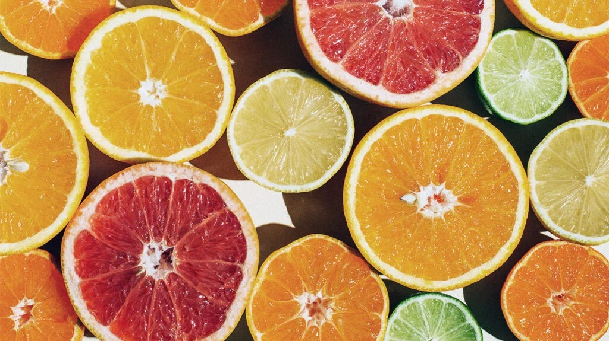
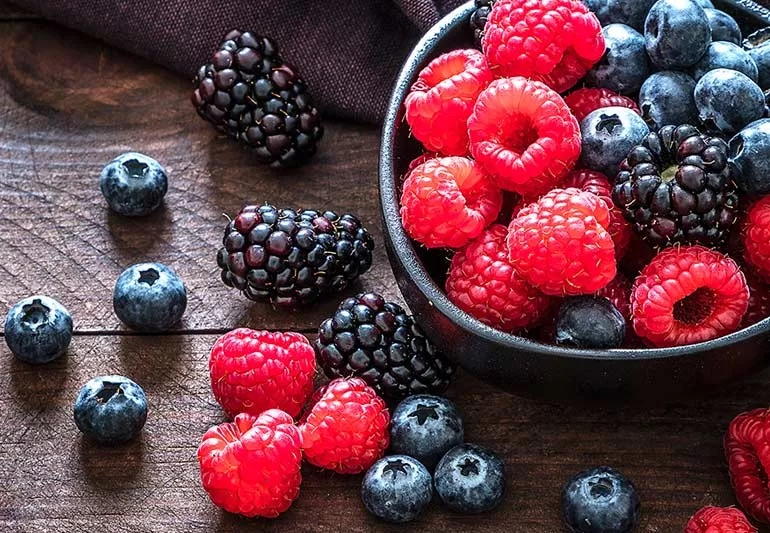
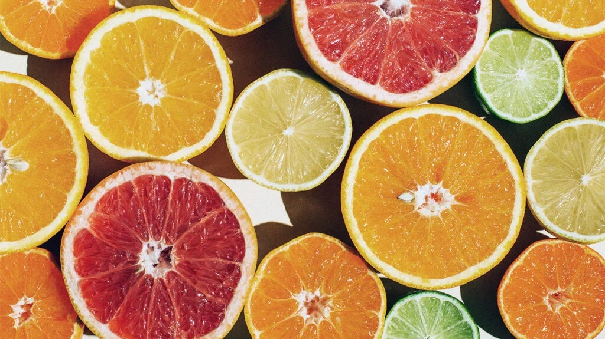
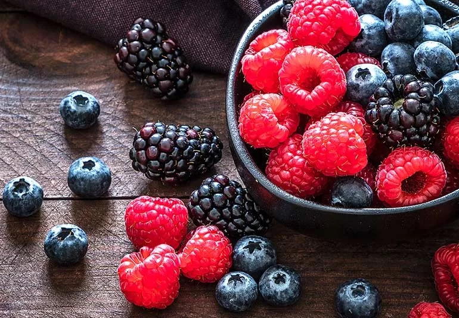

Home
 



Every fruit has its own unique appearance, taste, and texture. Some fruits are sweet and flowery, delicious on a cake or a bagel, while other fruits are better suited for savory dishes like nachos or cheeseburgers.
This can get overwhelming, so I've decided to make a simple directory of all of the fruits that I feel are relevant. On this website, I rate and review different aspects of each fruit, and I mention what food I think the fruit compliments.